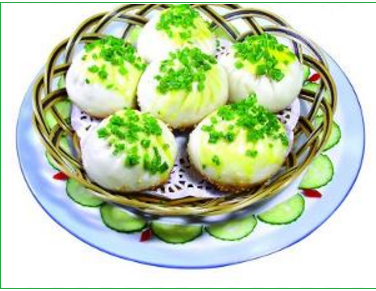
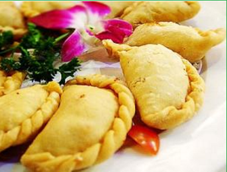

各地小吃:
- 南京小吃
- 苏州小吃
- 保定小吃
- 上海小吃
- 绍兴小吃
- 长沙小吃
- 北京小吃
- 徽州小吃
- 成都小吃
- 开封小吃
- 台湾小吃
- 天津小吃
- 重庆小吃
- 太原小吃
- 西安小吃
- 兰州小吃
- 新疆小吃
- 山东小吃
- 江苏小吃
- 浙江小吃
- 安徽小吃
- 福建小吃
- 海南小吃
- 河南小吃
- 湖北小吃
- 湖南小吃
- 广东小吃
- 广西小吃
- 莆田小吃
- 四川小吃
- 贵州小吃
- 云南小吃
- 香港小吃
- 澳门小吃
小吃的来源：
宋代，在吴氏的《中馈录》中出现了"甜食"一词，指甜点心。元代在无名氏的《居家必用事类全集》中出现"从食"一词，指饼类小食。同时该书卷十二庚的"饮食类"中详细记述了湿面食品14种、干面食品12种、从食品12种、煎酥乳酪品5种、造诸粉品（粉制食品）3种。由此可见，吃点心的习惯在当时已十分普及。到了明清两代，烹饪技术有了很大发展，这时的点心制作已更加完善。在清人顾仲的《养小录》中记载：饵之属（粉食类）16种，果之属（果实类）24种，粥之属（粥类）24 种，粉之属（用粉加工的食品）2种。李石亭的《醒园录》中记述了清代特有的点心，其中的"蒸西洋糕法"和"蒸鸡蛋糕法"，是采用西方的蛋糕制作技术。该书中的用"满洲饽饽法"制作的点心，也代表了清代特有的点心。在汪日桢的《湖雅》中列举了约20种点心。
经过若干年的发展，特色小吃成为美食文化不可缺少的一部分，各地的特色小吃也走出了地方特色。然而小吃发展到后期，已经有了另外一种涵意。虽然一样是讲究采用当地新鲜的食材，但是制作方法繁复、做工讲究，比讲究填饱肚子的主餐更为繁琐，是已经是一种在各地的饮食文化，绝非只是在三餐之间填饱肚子的层次。
各地的小吃图片
 |
|
|  |
中国各地小吃排名：
中国顶级小吃之都排名"在微博上火了，引来各地吃货们的追捧，尤其是上榜城市所在地吃货们的纷纷跟帖。上榜城市名单共有15个，依次是：台北、成都、西安、重庆、香港、广州、武汉、长沙、北京、上海、天津、厦门、南京、哈尔滨、开封等15个城市。
决定"排名"的因素包括以下几方面：该城市小吃的国内知名度、国内覆盖率、海外知名度、海外覆盖率、服务环境、外地人适应度、外埠扩张及市场化等。